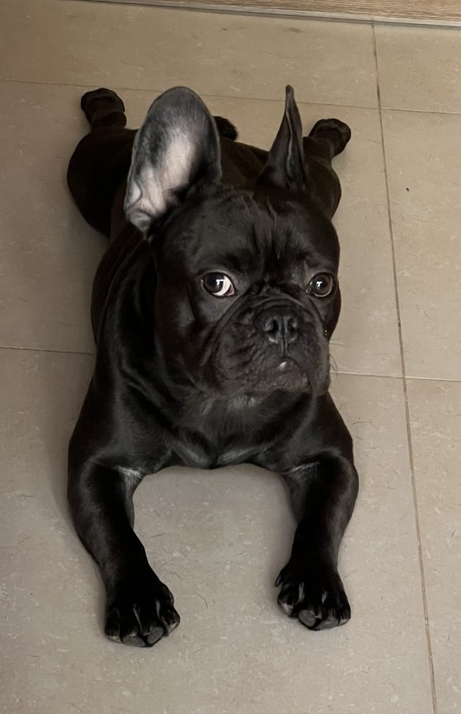

Мене звуть Арні. Я французьский бульдог та народився у січні 2023 року.
Найбільше за все я люблю бігати по квартирі та знайомитись з іншими собаками. Я дуже товариський.
Вважається, що французькі бульдоги виведені з англійських бульдогів, і служили бійцівськими собаками малого формату.
Але з допомогою британських любителів породи, не зацікавлених у собачих боях, французи поступово вийшли з ряду собак, що брали участь в бійках.
Сучасні кінологи вказують серед предків французького бульдога також зниклих в даний час іспанських бульдогів — аланів (що зазначено в стандарті породи)
Насправді французькі бульдоги виведені в Англії. І завдяки своєму компактному формату, французи стали з'являтися першими в англійських швачок, в якості домашніх улюбленців і щуроловів.
